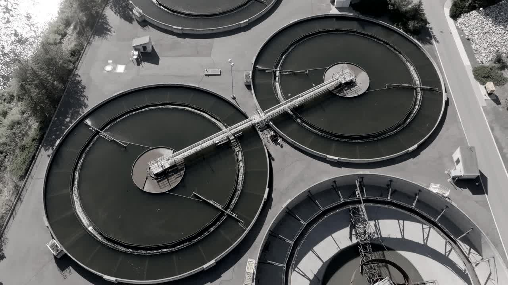

Validation
The evidence, in full.
We publish the record rather than describe it. Every figure below resolves to a report you can download and read in full.
Headline results
Validated on the hardest closed loop we could find, then backtested on real published process data. All results to date are simulation-validated or retrospective backtests. Terra is pre-revenue and has no live-farm deployment yet, and we say so on every report.
Validation reports
The primary record. Run counts, conditions, and calibration stated in each.
SIMOC Sealed-Habitat Validation
A 60-run ensemble across seven closed-habitat configurations, including Biosphere 2 mission presets and Mars habitats, run against SIMOC-ABM. Terra sees only two sensors and forecasts the crew-safety oxygen breach ahead of the gauge.
Download reportProof of Value on Real Data
The engine run over real published benchmark datasets (IWA BSM1 wastewater and the ADM1 digester), calibrating to them, forecasting the real excursions ahead of a raw gauge, and translating that lead time into modelled economics. Honest scope stated inside.
Download reportCross-Domain Model Run
One Bayesian engine validated across six domains against simulated ground truth, benchmarked on early-warning lead time and calibrated against real external process simulators. Reports hidden-state RMSE, 95% coverage, and uncertainty calibration per domain.
Download reportResearch Prototype Validation
Nine engine innovations taken from working prototype to a documented, reproducible acceptance criterion across every applicable domain and five random seeds. Result: 15 of 15 acceptance criteria passed.
Download reportAttribution note: the 98%, the median lead, and the 64 to 111 hours all come from SIMOC, the sealed-habitat test bed. The ~6.5 hours is separate and comes from real-data backtesting. We never blur the two. No result on this page is a paid pilot, a live deployment, or a customer outcome.
Go deeper
Want the full technical review?
These are the public reports. Operators and investors under evaluation get the complete data room, the source code walkthrough, and a live session with the person who wrote the model.